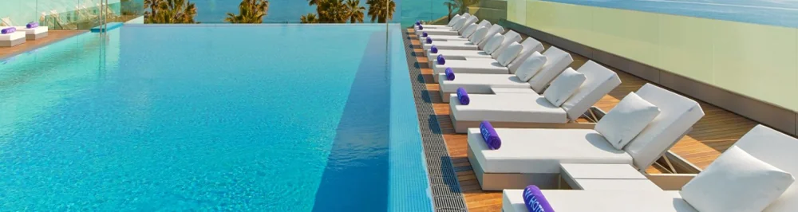
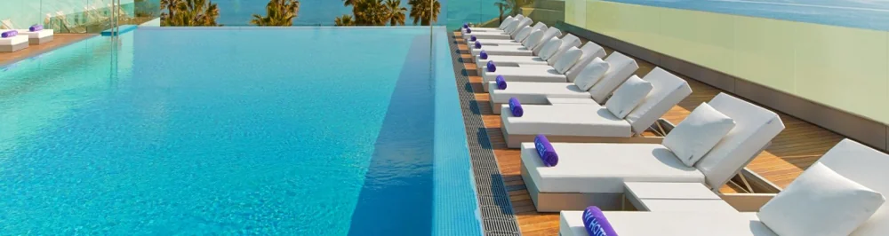

Frukost
Buffe:
• Färska bakverk: Croissanter, ensaimadas, och olika sorters bröd.
• Katalanska specialiteter: Pa amb tomàquet (bröd med tomat), churros med varm choklad.
• Pålägg och ostar: Iberico-skinka, chorizo, manchego-ost, brie.
• Äggstation: Omeletter, pocherade ägg, scrambled eggs, ägg Benedict.
• Frukt och yoghurt: Färsk frukt, bär, grekisk yoghurt, honung, granola.
• Drycker: Färskpressad apelsinjuice, kaffe, te, smoothies.
Snacks och mellanmål
• Snacks och mellanmål
• Mini bocadillos (smörgåsar) med olika fyllningar som iberico-skinka, manchego och tomat.
• Oliv- och osttallrikar.
• Färska frukter och nötblandningar.
• Små tapas som pimientos de padrón, albóndigas (köttbullar) och gambas al ajillo (vitlöksräkor).
Dryckesmeny
• Katalanska viner: Cava, Priorat, Penedès.
• Internationella viner och champagne.
• Katalanska och spanska ölsorter.
• Signaturcocktails inspirerade av Barcelona, som "Gaudí's Dream" och "Barcelona Sunset".
• Alkoholfria alternativ som mocktails, färskpressade juicer och teer.
 
